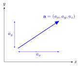
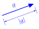
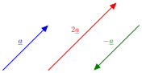
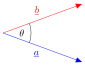
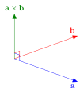

4. Vectors and Matrices#
Computer graphics relies heavily on mathematics of vectors and matrices. In this lab we will be revising these and show how we can perform calculations in C++.
4.1. The GLM library#
The GLM (OpenGL Mathematics) library is a popular C++ mathematics library designed to provide classes and functions for mathematical operations, specifically tailored for graphics programming using OpenGL. We will be using functions from GLM to perform calculations for us.
Create an empty project in Visual Studio or Xcode and called it lab03_vectors_and_matrices.
Using the command prompt in Windows or the terminal in macOS and navigate to your newly created project folder. Within the project folder clone the GLM repository
git clone https://github.com/g-truc/glm
Add the glm/ folder to your project.
Visual studio:
Right-click on your project in the project viewer and click on ‘Properties’.
Select ‘C/C++’ and then ‘General’.
Click on the down arrow next to ‘Additional Include Directories’ and then select ‘Edit’.
Add your glm/ folder and click OK a couple of times.
Xcode:
k
4.2. Vectors#
A vector in three-dimensional space is an object with magnitude (length) and direction. A vector is denoted by a boldface lower case letter, e.g., \(\mathbf{a}\), or an underlined lower case letter, e.g., \(\underline{a}\), when handwritten and represented mathematically by the 3-tuple
where \(a_x\), \(a_y\) and \(a_z\) are the displacement of the vector in the \(x\), \(y\) and \(z\) directions.
{kind=link}

4.2.1. Vector magnitude#
The magnitude of a vector \(\mathbf{a} = (a_x, a_y, a_z)\) is denoted by \(|\mathbf{a}|\) is the length from the tail of the vector to the head and calculated using
{kind=link}

For example, the magnitude of the vector \(\mathbf{u} = (2, 2, 1)\) is
We will now define this vector in C++ and use the glm library to calculate its magnitude.
#include <iostream>
#define GLM_ENABLE_EXPERIMENTAL // needed for the to_string function
#include <glm/glm.hpp>
#include <glm/ext.hpp>
int main() {
// Vector magnitude
glm::vec3 u(2.0f, 2.0f, 1.0f); // define the vector u
float uMag = glm::length(u);
std::cout << "Vector magnitude\n----------------" << std::endl;
std::cout << "u = " << glm::to_string(u) << std::endl;
std::cout << "|u| = " << uMag << std::endl;
return 0;
}
The glm::vec u(2.0f, 2.0f, 1.0f) command defines a 3-element vector u and the magnitude is calculated using glm::length(u). The output of the program is shown below.
Vector magnitude
----------------
u = vec3(2.000000, 2.000000, 1.000000)
|u| = 3
4.2.2. Vector multiplication by a scalar#
The multiplication of a vector \(\mathbf{a} = (a_x, a_y, a_z)\) by a scalar (a number) \(k\) is calculated using
Multiplying a vector by a positive scalar has the effect of scaling the length of the vector. Multiplying by a negative scalar reverses the direction of the vector.
{kind=link}

For example, multiplying the vector \(\mathbf{u} = (2, 2, 1)\) by the scalar 2 gives
which has the magnitude
To multiply a glm vector by a scalar we simply using the standard * operator. Add the following to your code to check it returns the correct vector.
Add the following code to your program.
// Multiplication by a scalar
float k = 2.0f;
glm::vec3 u2 = k * u;
std::cout << "\nMultiplication by a scalar\n--------------------------" << std::endl;
std::cout << "2u = " << glm::to_string(u2) << std::endl;
The output is
Multiplication by a scalar
--------------------------
2u = vec3(4.000000, 4.000000, 2.000000)
4.2.3. Unit vectors#
A unit vector is a vector that has a magnitude of 1. We can find a unit vector that points in the same direction as a non-zero vector \(\mathbf{a}\), which is denoted by \(\hat{\mathbf{a}}\) (pronounced “a-hat”), by dividing by its magnitude, i.e.,
For example, to determine a unit vector pointing in the same direction as \(\mathbf{u} = (2, 2, 1)\)
Checking that \(\hat{\mathbf{u}}\) has a magnitude of 1
Add the following to your program
// Unit vectors
glm::vec3 uHat = u / uMag;
float uHatMag = glm::length(uHat);
std::cout << "\nMultiplication by a scalar\n--------------------------" << std::endl;
std::cout << "uhat = " << glm::to_string(uHat) << std::endl;
std::cout << "|uhat| = " << uHatMag << std::endl;
The output is
Unit vectors
------------
uhat = vec3(0.666667, 0.666667, 0.333333)
|uhat| = 1
4.2.4. Vector addition and subtraction#
The addition and subtraction of two vectors \(\mathbf{a} = (a_x, a_y, a_z)\) and \(\mathbf{b} = (b_x, b_y, b_z)\) is defined by
For example, given the vectors \(\mathbf{u} = (2,2,1)\) and \(\mathbf{v} = (3, 4, 5)\)
The standard + and - operators are used to add and subtract glm vectors. Add the following code to your program.
// Vector addition and subtraction
glm::vec3 v(3.0f, 4.0f, 5.0f);
glm::vec3 uPlusv = u + v;
glm::vec3 uMinusv = u - v;
std::cout << "\nVector addition and subtraction\n-------------------------------" << std::endl;
std::cout << "v = " << glm::to_string(v) << std::endl;
std::cout << "u + v = " << glm::to_string(uPlusv) << std::endl;
std::cout << "u - v = " << glm::to_string(uMinusv) << std::endl;
The output is
Vector addition and subtraction
-------------------------------
v = vec3(3.000000, 4.000000, 5.000000)
u + v = vec3(5.000000, 6.000000, 6.000000)
u - v = vec3(-1.000000, -2.000000, -4.000000)
4.2.5. Dot product#
The dot product between two vectors \(\mathbf{a} = (a_x, a_y, a_z)\) and \(\mathbf{b} = (b_x, b_y, b_z)\) is denoted by \(\mathbf{a} \cdot \mathbf{b}\) and returns a scalar quantity (a number). The dot product is calculated using
The dot product is related to the angle between the two vectors by the relationship
where \(\theta\) is the angle between the vectors \(\mathbf{a}\) and \(\mathbf{b}\).
{kind=link}

A useful result for computer graphics is that if \(\theta=0\) then \(\cos(90^\circ)= 0\) and equation (4.6) becomes
In order words, if the dot product of two vectors is zero then the two vectors are perpendicular.
For example, given the vectors \(\mathbf{u} = (2,2,1)\) and \(\mathbf{v} = (3, 4, 5)\) the dot product \(\mathbf{u} \cdot \mathbf{v}\) is
The glm function for calculating the dot product is glm::dot(a,b). Add the following to your program.
// The dot product
float uDotv = glm::dot(u, v);
std::cout << "\nThe dot product\n--------------- " << std::endl;
std::cout << "u . v = " << uDotv << std::endl;
The output is
The dot product
---------------
u . v = 19
4.2.6. Cross products#
The cross product between two vectors \(\mathbf{a} = (a_x, a_y, a_z)\) and \(\mathbf{b} = (b_x, b_y, b_z)\) is denoted by \(\mathbf{a} \times \mathbf{b}\) and returns a vector. The cross product is calculated using
The cross product between two vectors produces another vector that is perpendicular to both vectors. This is another incredibly useful result as it allows use to calculate normal vectors for polygons which are used in calculating how light is reflected off surfaces.
{kind=link}

For example, given the vectors \(\mathbf{u} = (2,2,1)\) and \(\mathbf{v} = (3, 4, 5)\) the cross product \(\mathbf{u} \times \mathbf{v}\) is
Show that \(\mathbf{u} \times \mathbf{v}\) is perpendicular to both \(\mathbf{u}\) and \(\mathbf{v}\)
The glm function for calculating the cross product between two vectors is glm::cross(a,b). Add the following code to your program.
// The cross product
glm::vec3 uCrossv = glm::cross(u, v);
float uDotuCrossv = glm::dot(u, uCrossv);
std::cout << "\nThe cross product\n----------------- " << std::endl;
std::cout << "u x v = " << glm::to_string(uCrossv) << std::endl;
std::cout << "u . (u x v) = " << uDotuCrossv << std::endl;
The output is
The cross product
-----------------
u x v = vec3(-1.000000, -2.000000, -4.000000)
u . (u x v) = 0
4.3. Matrices#
A matrix is a rectangular array of numbers
We refer to the size of a matrix by the number of horizontal rows \(\times\) the number of vertical columns. Here the matrix \(A\) has 2 rows and 3 columns so we call this matrix a \(2 \times 3\) matrix. The individual elements of a matrix are referenced by an index which is a pair of numbers, the first of which is the row number and the second is the column number, so \(a_{ij}\) is the element in row \(i\) and column \(j\) of the matrix \(A\).
For example for the matrix \(A\) defined above \(a_{11} = 1\), \(a_{12} = 2\), \(a_{21} = 4\) etc.
The glm command for defining a matrix is glm::matn where n is the number of rows and columns of the matrix (e.g., glm::mat2 will define a \(2\times 2\) matrix). Lets define a \(2 \times 2\) matrix \(A\) in our program and print it. Add the following to your program.
// Defining a matrix
glm::mat2 A = glm::mat2(glm::vec2(1,2), glm::vec2(3,4));
std::cout << "\nDefining a matrix\n-----------------" << std::endl;
std::cout << "A = " << std::endl;
std::cout << A[0][0] << " " << A[0][1] << std::endl;
std::cout << A[1][0] << " " << A[1][1] << std::endl;
Note that we have defined each row of the matrix A using 2-element vectors and that the indexing starts at 0, e.g., element \(a_{11}\) is indexed using A[0][0] (the same applies to vectors).
The output is
Defining a matrix
-----------------
A =
1 2
3 4
We will be print a number of matrices so it would make sense to define a function to do this. Outside of your main function add the following code.
void print_matrix(glm::mat4 mat, int rows, int cols) {
for (int i = 0; i < rows; i++) {
for (int j = 0; j < cols; j++) {
std::cout << mat[i][j] << " ";
}
std::cout << std::endl;
}
}
You can now replace the lines that print the matrix with print_matrix(A, 2, 2) which achieves the same result.
4.3.1. Matrix transpose#
The transpose of a matrix \(A\) is denoted by \(A^\mathsf{T}\) and is defined by swapping the rows and columns of \(A\).
For example, given the matrix \(A\) defined earlier
The glm function to calculate the transpose of a matrix is glm::transpose(A). Add the following code to your program.
// Matrix transpose
glm::mat2 AT = glm::transpose(A);
std::cout << "\nMatrix transpose\n-----------------" << std::endl;
print_matrix(AT, 2, 2);
The output is
Matrix transpose
-----------------
1 3
2 4
4.3.2. Matrix multiplication#
The addition, subtraction and multiplication by a scalar for matrices is the same as for vectors. The multiplication of two matrices is defined in a specific way as follows
where \(\mathbf{a}_i\) is the vector formed from row \(i\) of \(A\) and \(\mathbf{b}_j\) is the vector formed from column \(j\) of \(B\). For example given the two matrices \(A\) and \(B\)
then the multiplication \(AB\) is